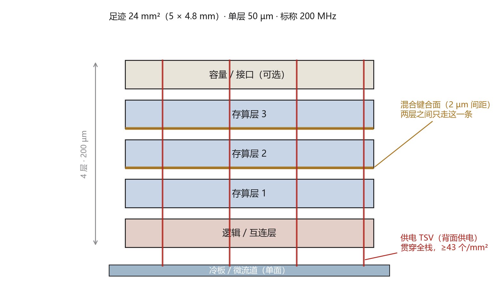
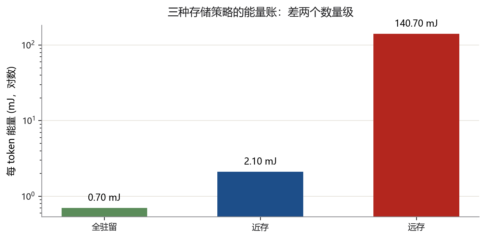
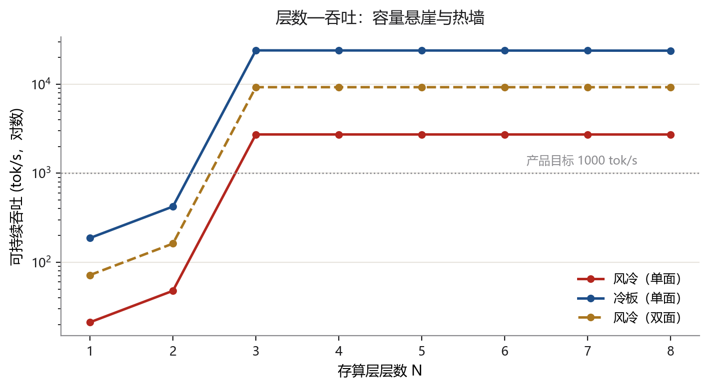
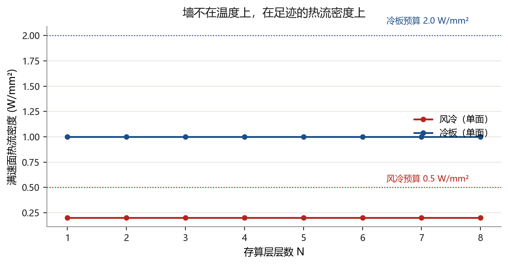
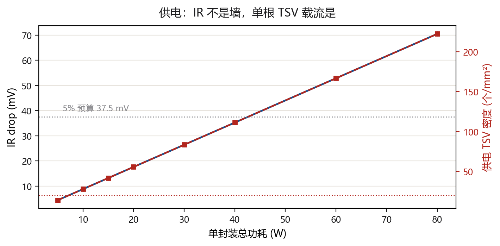
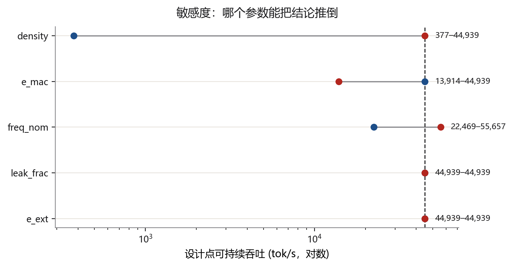

面向存内计算的三维异构集成架构与供电—热协同优化
存内计算把权重放进阵列，三维堆叠把容量放进同一个足迹。两件事都被说成「越多越好」。 本作品只回答一个问题：在给定足迹、给定功耗预算下，第几层开始是白叠的。
结论：层数由容量决定；吞吐的上限由足迹上的热流密度决定，与层数几乎无关； 供电由单根 TSV 的载流决定。三件事在三个不同的轴上——这就是「堆得越高越快」失效的原因。

全部数字由本仓库 stco 模型复算，py -3 run.py 一条命令重建。
这是解析模型与数值求解，不是硅测量；假设与区间写在第 14 页。
| 问题 | 答案 | 怎么算出来的 |
|---|---|---|
| 7B@4bit 要几层才装得下 | 3 层（容量 3,600 MB ≥ 模型 3,338 MB） | 单层 24 mm² × 50 MB/mm² = 1200 MB，向上取整 |
| 少一层会怎样 | 2 层只有 48 tok/s，3 层 2,730（57 倍） | 装不下的 938 MB/token 走外部 HBM，每 bit 5 pJ |
| 风冷多一层有用吗 | 没有：3 层 2,730 → 8 层 2,726 | 足迹热流密度锁在 0.2 W/mm²，功率天花板不随层数变 |
| 冷板多一层有用吗 | 也没有：3 层 24,017 → 4 层 23,985 → 8 层 23,850 | 冷板预算 1.0 W/mm² = 24 W；3 层已把它用满 |
| 供电是不是墙 | IR 不是（21.1 mV < 37.5 mV）；单根 TSV 是 | 32 A 要 ≥67 个/mm²，默认 20 不够 |
| 层序（谁在上面）要紧吗 | 不要紧：最好与最差只差 1.3 K | 50 µm 薄 die 的层间热阻只有外部热阻的 2% |
| 参数 | 取值 | 依据 |
|---|---|---|
| 层数 | 3 层存算 + 1 层逻辑 | 容量向上取整；逻辑层放 NoC、接口与存储控制器 |
| 足迹 / 堆高 | 24 mm² / 200 µm | 3 层存算 + 1 层逻辑，各 50 µm 减薄 + 键合界面 |
| 冷却 | 冷板（单面） | 满速 24.0 W = 1.00 W/mm²；风冷预算只有 0.2 |
| 可持续吞吐 | 24,017 tok/s | 热流上限（算力上限 44,939 还没用到）；目标 1,000 有 24 倍余量 |
| 目标工况功耗 | 2.1 W | 其中逻辑层静态 1.2 W；阵列只占 0.94 W |
| 供电 TSV | ≥67 个/mm² | 单根 ≤20 mA；面积代价约 0.00% |
出题单位（微纳核芯）在公开公告里写清了四件事。逐条对照，避免答非所问。
| 赛题要求 | 本作品的做法 | 证据 |
|---|---|---|
| 面向明确的存内计算应用或负载 | 7B 级 LLM 解码：每 token 7.0e9 次 MAC、权重 3.34 GB | 第 5 页 |
| 设计含计算、存储、互连模块的三维异构集成架构 | 3 层存算 + 1 层逻辑/互连；权重常驻阵列，激活走混合键合 | 第 4 页 |
| 用 STCO 做芯片—封装—系统联合分析 | 四本账（容量/能量/热/供电）共用一个足迹与同一个功耗变量 | 第 5 页 |
| 对性能、数据搬移、能效、供电、温度量化评估 | 吞吐 tok/s、每 token 能量 mJ、W/mm²、IR mV、结温 °C | 第 6–10 页 |
| 用理论分析、数学建模或仿真验证 | 解析式 + 一维热网络数值解 + 不动点迭代，verify.py 断言 | 第 14 页 |
| 不强制流片 / 版图 / 实体芯片 | 本作品不声称硅结果；所有数字标注为模型输出 | 第 14 页 |
pub / est，est 全部做敏感度。图 1 剖面示意（按参数表比例绘制）：冷板 → 逻辑/互连层 → 三层存算 → 可选容量层。 金色为混合键合面，红色为贯穿全栈的背面供电 TSV。
| 裸片面积 | 24 mm²（5 × 4.8 mm） |
| 减薄厚度 | 50 µm |
| 键合间距 | 2 µm |
| 每层阵列 | 32 个 128×128 宏 |
| 标称频率 | 200 MHz |
| 供电 TSV | ≥67 个/mm² |
这个架构没有任何「新器件」：ReRAM 宏、混合键合、背面供电都是产线上已有的东西。 本作品的贡献不在发明器件，而在把三本互相打架的账放在同一个足迹上算清楚。
STCO 的难点不是算每一本账，而是让四本账共用同一组变量。本模型只引入一个贯穿全局的自由变量——层数 N， 以及由它派生出的功耗 P(N)。四本账都写成 N 的函数，冲突就自己浮出来了。
| 账本 | 式子 | 取数与依据 |
|---|---|---|
| 容量 | C(N) = N · A · ρ，A = 24 mm²，ρ = 50 MB/mm² | ρ 是 4-bit MLC 的面密度工程估计（12.5–100），第 12 页做敏感度 |
| 能量 | E = 7.0e9 · eMAC + 溢出字节 · ebit | eMAC = 100 fJ（宏级 10 TOPS/W）；ebit = 5 pJ（HBM）/ 0.05 pJ（键合） |
| 热 | G·T = P(N,T)；Pleak = 8%·Pdyn·2(T−25)/20；面热流 q = P/A ≤ qmax | 一维热阻网络逐层到冷板；泄漏与温度做不动点迭代 |
| 供电 | I = P/Vdd；ΔV = I·(Rtsv(n) + Rpkg)；itsv ≤ 20 mA | Vdd = 0.75 V；Rpkg = 0.3 mΩ |
解码（decode）：每 token 7e9 次 MAC，占空比 = 目标吞吐 / 算力上限。功耗随吞吐线性增长， 本设计点只有 2.1 W。它决定的是容量够不够——不够就得搬权重，能量立刻涨两个数量级。
满速（prefill / 大 batch）：所有阵列跑满频，功耗与吞吐无关， 24.0 W 压在 24 mm² 上 = 1.00 W/mm²。 它决定的是散热与供电。
把两个工况混在一起，会得到两种常见的错结论：「CIM 很省电所以不热」（拿解码功耗估散热）、 「堆得越高算力越强」（忽略满速时功率被足迹锁死）。本模型的每一条结论都注明了是在哪个工况下成立的。
实现：params.py（参数单一来源）· thermal.py（热网络 + 不动点）·
design.py（两工况评估）· explore.py（扫掠/层序/敏感度）。只依赖 numpy。

图 2 同一个 7B@4bit 模型、同一个足迹，只改权重放在哪里。
| 策略 | 每 token 能量 | @ 1,000 tok/s | 含义 |
|---|---|---|---|
| 全驻留 | 0.70 mJ | 0.70 W | 权重在阵列里，能量只剩算力地板 |
| 近存（键合读容量层） | 2.10 mJ | 2.10 W | 装不下时退一步，靠 0.05 pJ/bit 的键合 |
| 远存（外部 HBM） | 140.70 mJ | 140.70 W | 每 bit 5 pJ，是键合的 100 倍 |
算力地板是 0.70 mJ/token；外部搬运是 140.70 mJ/token。 也就是说，「装不装得下」这一个二值问题，值 201 倍的能量。 所以三维堆叠的第一价值不是算力，是容量——它把 3.34 GB 塞进 24 mm² 的足迹，让「全驻留」从不可能变成可能。
对照：同样 7B@4bit、同样 1,000 tok/s，纯数字阵列（0.5 pJ/MAC）+ 外部 HBM 需要 143.5 mJ/token ≈ 144 W。 本设计的 0.70 mJ 是它的 1/205。
| 模型 | 权重 (MB) | 单层容量 (MB) | 所需层数 | 堆高 (µm) | 结论 |
|---|---|---|---|---|---|
| 1B@4bit | 477 | 1,200 | 1 层 | 50 | 可行：单层足矣 |
| 7B@4bit | 3,338 | 1,200 | 3 层 | 150 | 可行：本设计点 |
| 7B@8bit | 6,676 | 1,200 | 6 层 | 300 | 勉强：堆高超过 300 µm |
| 70B@2bit | 16,689 | 1,200 | 14 层 | 700 | 不可行：必须离开全驻留 |
| 70B@4bit | 33,379 | 1,200 | 28 层 | 1,400 | 不可行：必须离开全驻留 |
同一个公式，五个模型，两种结论：7B@4bit 落在「3 层」这个舒服的位置上；70B 无论怎么量化都离不开全驻留 （28 层 = 1.4 mm 高，热、成品率、翘曲都不成立）。这不是设计偏好，是密度的算术。
如果模型换成 7B@8bit（6,676 MB），答案立刻变成 6 层—— 而 6 层在风冷下只有 2,728 tok/s，比 3 层还低。 「量化位宽」在这里等价于「层数预算」，这是本模型给出的、可以直接指导产品定义的一条换算关系。

图 3 可持续吞吐 vs 层数（对数纵轴）。虚线是产品目标 1,000 tok/s。
| N | 风冷 tok/s | 风冷 W/mm² | 冷板 tok/s | 冷板 W/mm² | 受限项 |
|---|---|---|---|---|---|
| 1 | 21 | 0.20 | 187 | 1.00 | 热流密度 |
| 2 | 48 | 0.20 | 423 | 1.00 | 热流密度 |
| 3 | 2,730 | 0.20 | 24,017 | 1.00 | 热流密度 |
| 4 | 2,729 | 0.20 | 23,985 | 1.00 | 热流密度 |
| 5 | 2,728 | 0.20 | 23,952 | 1.00 | 热流密度 |
| 6 | 2,728 | 0.20 | 23,918 | 1.00 | 热流密度 |
| 7 | 2,727 | 0.20 | 23,884 | 1.00 | 热流密度 |
| 8 | 2,726 | 0.20 | 23,850 | 1.00 | 热流密度 |
把平台的高度写成式子： tok/s ≤ (qmax · A − Pstatic) / Etoken。 这个式子里没有 N。代入得风冷上界 5,141、冷板上界 32,562， 而模型给出 2,730 与 24,017。 差的那一截是泄漏：风冷削掉 47%、 冷板削掉 26%—— 越凉削得越少，因为泄漏随温度指数上升。闭式只能当上界用。

图 4 满速面热流密度 vs 层数。两条点线是两种冷却的面热流预算。
本设计点的满速结温是 66.4 °C（24.0 W、冷板 Rhs 1.25 K/W、 冷媒 35 °C），离 85 °C 还有 19 K。 风冷 3 层也只有 80.3 °C。也就是说，风冷的问题不是「烧得太热」， 而是「这点面积根本散不出这么多瓦」——热量还没把结温推上去，扩散热阻先到顶了。
这一点很容易被 1D 热阻模型骗过去：只要 Rhs 给得足够小，模型会允许 24 mm² 里塞几十瓦。 所以模型里必须同时有面热流密度上限 qmax，否则会得出「冷板能带走 600 W」这种结论。
泄漏与温度是正反馈：功率↑ → 结温↑ → 泄漏↑。模型用不动点迭代解， 本设计点 20 次收敛、残差 0.0。 在 85 °C 上泄漏是动态功耗的 64%—— 供电与散热要按 1.4 倍的动态功耗设计，这部分预算常常在纸面上被漏掉。
层间温差：自下而上各层 65.4 / 65.9 / 66.2 / 66.4 °C， 极差 1.0 K。 薄 die 让「内层更热」这个直觉在这个尺度上不成立。
把冷板也贴到顶面，等于拿到第二份 0.2 W/mm² 的预算、热阻也并联减半：风冷双面 3 层能到 9,272 tok/s，是单面的 3.4 倍， 是单面冷板的 0.39 倍。一条可以谈成本的选择题，不是「越冷越好」。

图 5 总功耗 vs IR drop（蓝）与满足载流所需的供电 TSV 面密度（红虚线）。
| 量 | 满速值 | 判据 | 结论 |
|---|---|---|---|
| 总电流 | 32.0 A | I = P / 0.75 V | 小封装上的大电流 |
| IR drop | 21.1 mV（封装 9.6 + TSV 11.5） | ≤ 5% × 0.75 V = 37.5 mV | 通过，余量 44% |
| 所需供电 TSV 密度 | 67 个/mm² | 单根 ≤ 20 mA | 默认 20 个/mm² 不够，需 3.3 倍 |
| TSV 面积代价 | 0.00% | 按 5 µm 直径计 | 可忽略，代价在工艺不在面积 |
| 单根电流密度 | 101,858.9×10⁵ A/cm² | Cu 电迁移经验限 ~1×10⁵ | 20 mA 恰好压线；50 mA 到 2.5 倍，不可用 |
这条账本来是我以为会最先成为墙的：32 A 穿过多层堆叠，听起来就不可能。 算下来 IR 只有 21 mV——真正的约束是每根 TSV 的载流上限，它逼出一个密度规格 （≥67 个/mm²），而不是逼死这个架构。 报告保留这条否定结果，因为它决定了要不要为供电留面积。
一开始我以为「谁在上面」会是三维堆叠的核心设计变量：热源应该远离冷板还是靠近冷板？ 于是写了个穷举器，把逻辑层、容量层、三层存算共 20 种去重排列全部解一遍热网络。
| 排列 | 满速峰值结温 |
|---|---|
| 最优：cim → cim → cim → dram → logic | 77.49 °C |
| 最差：logic → dram → cim → cim → cim | 78.82 °C |
| 全部排列的极差 | 1.33 K |
1.3 K 的极差，在 50 K 的预算里几乎等于噪声。 原因很简单：50 µm 薄 die 的层间热阻约 0.02 K/W，而 TIM + 散热器是它的 20 倍以上。 热量不是「卡在中间」，而是一起被最外面那一段堵住。
这是本轮唯一被自己推翻的假设；写进来是因为「模型说不出话的地方」比「模型说出漂亮话的地方」更值得记。

图 6 单参数取区间两端时，设计点可持续吞吐的移动（对数横轴，虚线为基准）。
| 参数 | 区间 | 设计点吞吐 (tok/s) | 倍数 |
|---|---|---|---|
| density | 12.5 – 100 MB/mm^2 | 377 – 44,939 | 119.1× |
| e_mac | 4e-14 – 4e-13 J/MAC | 13,914 – 44,939 | 3.2× |
| freq_nom | 1e+08 – 3e+08 Hz | 22,469 – 55,657 | 2.5× |
| leak_frac | 0.05 – 0.15 1 | 44,939 – 44,939 | 1.0× |
| e_ext | 3e-12 – 7e-12 J/bit | 44,939 – 44,939 | 1.0× |
把密度从 50 调到 12.5，设计点吞吐会掉到 377 tok/s—— 因为 7B@4bit 突然需要 12 层，而任何冷却都装不下 12 层。这条不是热的问题，是容量的算术：
| ρ (MB/mm²) | 单层容量 (MB) | 7B@4bit 所需层数 | 结论 |
|---|---|---|---|
| 12.5 | 300 | 12 层 | 12 层（不可行） |
| 50.0 | 1,200 | 3 层 | 3 层（本设计点） |
| 100.0 | 2,400 | 2 层 | 2 层 |
ρ 是全篇最弱的假设（区间跨一个数量级）。所以本报告的结论应该这样读： 「3 层」不是绝对数字，而是「密度 50 MB/mm² 下 7B@4bit 的容量解」。 密度变一半，答案就变一半——这条换算关系比具体数字更有用。
关于「e_mac 变 10 倍、吞吐只变 2.5 倍」：设计点本身是 热流受限的，算力还有 1.9 倍余量； 只有把每 MAC 能量放大到 4 倍（400 fJ），算力上限才掉到热流上限之下，吞吐才开始跟能量走。 不是线性关系失效，是两根约束在交叉。
其次是频率（3.2×）与每 MAC 能量（2.5×）： 这两个都是「满速功耗」的乘数，而满速功耗决定你能不能吃到那条热流预算。泄漏与外部搬运能量在本设计点不影响结论 （1.0×），因为此时两者都不是瓶颈——这不代表它们不重要，只代表在这个点上它们不是杠杆。
把四本账合起来，可以得到一张不看具体数字也能用的判据表。它的价值在于：先判断你落在哪个区，再决定要不要做三维。
| 你落在哪 | 判据 | 该做什么 |
|---|---|---|
| 容量区（本作品） | 模型字节 / 单层容量 ∈ (1, 4] | 三维全驻留值得做；层数按容量取整，冷却按满速的热流密度选 |
| 算力区 | 模型装得下，但单层算力不够 | 先加层；此时层数是线性的，前提是热流预算跟得上（本例需冷板） |
| 搬运区 | 模型字节 / 单层容量 > 6 | 不要试图全驻留（70B 要 28 层）；改用近存/键合流式，靠 0.05 pJ/bit 而不是 5 pJ/bit |
| 散热区 | W/mm² > 0.2 且只能风冷 | 层数不是杠杆：风冷 3 层已到顶，加层吞吐不涨（8 层 2,726） |
| 供电区 | 总电流 / 面积 > 4,444 A/mm² | 先加供电 TSV 密度；IR 通常不是问题，单根载流才是 |
7B@4bit / 24 mm² → 容量比 2.78，落在容量区；满速 1.00 W/mm²， 超过风冷的 0.2 → 必须冷板。两条判据同时指向「3 层 + 冷板」，而不是「越多越好」。
如果只能从这份报告里带走一句话：三维堆叠买到的是容量和延迟，不是免费的吞吐。 吞吐的上限写在足迹的热流密度上，而足迹是二维的——它不会因为你叠得更高而变大。
补充一句工程判断：如果产品只要 1,000 tok/s，那么 1 层 + 冷板（187 tok/s） 其实不够，2 层（423）刚好卡在目标线上——目标定在 1000 tok/s 这个位置，恰好把「2 层不够、3 层有余」暴露出来。 定目标的时候顺手看一眼这条曲线，比事后加层便宜。
| 假设 | 取值 | 为什么弱 | 影响 |
|---|---|---|---|
| 密度 ρ | 50 MB/mm² | 4-bit MLC 面密度的工程估计，公开可核的商用宏数据很少 | 直接决定层数（12.5 → 12 层，100 → 2 层） |
| 每 MAC 能量 | 100 fJ | 宏级 10 TOPS/W；系统级含缓冲/NoC 通常更差 | 满速功耗线性放大，4 倍时吞吐掉到 0.65× |
| 面热流上限 qmax | 0.2 / 1.0 W/mm² | 风冷/冷板的经验区间，随封装与散热器形态变化大 | 决定平台高度：q 翻倍，吞吐几乎翻倍 |
py -3 run.py # 模型 → results.json → 图 → 本 PDF → 作品页
py -3 verify.py # 断言：能量守恒、热网络残差、不动点唯一性、量纲、单调性、确定性
py -3 -c "from stco import design; print(design.evaluate(3, 'liquid'))"
参数全部在 stco/params.py，带 kind（pub/est/derived）与区间；
报告里的每个数字都能由 out/results.json 复算。模型输出固定迭代次数与排序，
同机重跑逐字节一致（verify.py 会断言这一点）。
给评委的一句话：这个作品没有漂亮的芯片照片，只有一本能自己算、也能被自己推翻的账。
如果只能验证一件事，请跑 verify.py；如果只能质疑一件事，请质疑密度 ρ 与面热流上限 qmax。